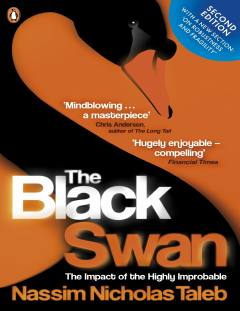

TBKutilmagan va kam uchraydigan hodisalarning hayotimizga ta'siri haqidagi mashhur kitob.
Kitob juda kam uchraydigan, ammo kutilmaganda ulkan ta'sir ko'rsatadigan hodisalar — "Qora oqqush"lar haqida hikoya qiladi. Muallif Nassim Nicholas Taleb insoniyat tarixini, ilm-fan va moliyaviy bozorlarni shakllantiruvchi tasodifiy omillarni tahlil qiladi.